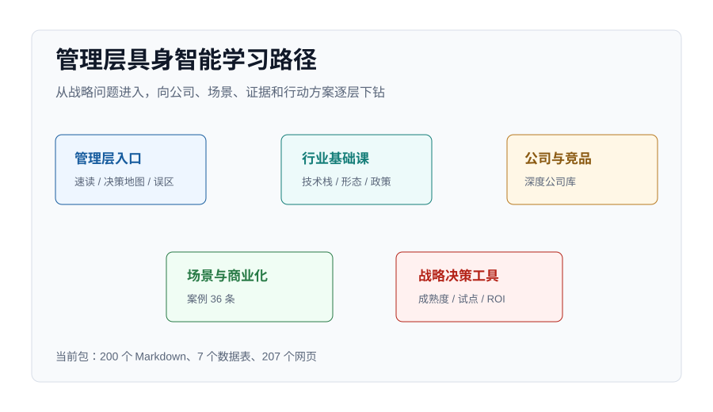

200Markdown
7数据表
207网页
51中国公司
36落地案例
651来源记录
管理层入口
管理层入口
管理层简报：为什么现在要学习具身智能机器人
reports/executive/01_board_briefing.md
管理层入口
战略决策地图：管理层如何判断是否进入
reports/executive/02_decision_map.md
管理层入口
2026 重点观察清单
reports/executive/03_2026_watchlist.md
管理层入口
常见误区：管理层最容易被误导的 12 件事
reports/executive/04_common_misconceptions.md
管理层入口
管理层具身智能机器人战略学习指南
reports/management_learning_guide.md
行业基础课
行业基础课
行业基础课：什么是具身智能
reports/basics/01_what_is_embodied_ai.md
行业基础课
行业基础课：机器人形态与任务适配
reports/basics/02_robot_forms.md
行业基础课
行业基础课：VLA、数据飞轮与遥操作
reports/basics/03_vla_and_data_flywheel.md
行业基础课
行业基础课：机器人硬件栈
reports/basics/04_hardware_stack.md
行业基础课
行业基础课：政策、标准与安全
reports/basics/05_policy_and_standardization.md
行业基础课
具身智能机器人产业图谱
reports/industry_map.md
行业基础课
技术路线梳理
reports/technology_routes.md
公司与竞品
公司与竞品
公司深度分析：智元机器人
reports/company_profiles/agibot.md
公司与竞品
公司深度分析：Agility Robotics
reports/company_profiles/agility_robotics.md
公司与竞品
公司深度分析：Apptronik
reports/company_profiles/apptronik.md
公司与竞品
智元机器人：公司定位与管理层摘要
reports/company_profiles/china_deep_dive/core/agibot/01_overview.md
公司与竞品
智元机器人：发展历程与组织能力
reports/company_profiles/china_deep_dive/core/agibot/02_history.md
公司与竞品
智元机器人：产品矩阵与任务边界
reports/company_profiles/china_deep_dive/core/agibot/03_products.md
公司与竞品
智元机器人：技术路线与数据闭环
reports/company_profiles/china_deep_dive/core/agibot/04_technology.md
公司与竞品
智元机器人：供应链、成本与制造能力
reports/company_profiles/china_deep_dive/core/agibot/05_supply_chain_cost.md
公司与竞品
智元机器人：客户、案例与商业化证据
reports/company_profiles/china_deep_dive/core/agibot/06_customers_deployment.md
公司与竞品
智元机器人：商业模式与收入质量
reports/company_profiles/china_deep_dive/core/agibot/07_business_model.md
公司与竞品
智元机器人：竞争对手与替代方案
reports/company_profiles/china_deep_dive/core/agibot/08_competition.md
公司与竞品
智元机器人：管理层合作建议与试点路径
reports/company_profiles/china_deep_dive/core/agibot/09_management_decision.md
公司与竞品
智元机器人：风险、跟踪指标与来源索引
reports/company_profiles/china_deep_dive/core/agibot/10_risks_sources.md
公司与竞品
智元机器人深度分析总入口
reports/company_profiles/china_deep_dive/core/agibot/index.md
公司与竞品
云深处科技：公司定位与管理层摘要
reports/company_profiles/china_deep_dive/core/deep_robotics/01_overview.md
公司与竞品
云深处科技：发展历程与组织能力
reports/company_profiles/china_deep_dive/core/deep_robotics/02_history.md
公司与竞品
云深处科技：产品矩阵与任务边界
reports/company_profiles/china_deep_dive/core/deep_robotics/03_products.md
公司与竞品
云深处科技：技术路线与数据闭环
reports/company_profiles/china_deep_dive/core/deep_robotics/04_technology.md
公司与竞品
云深处科技：供应链、成本与制造能力
reports/company_profiles/china_deep_dive/core/deep_robotics/05_supply_chain_cost.md
公司与竞品
云深处科技：客户、案例与商业化证据
reports/company_profiles/china_deep_dive/core/deep_robotics/06_customers_deployment.md
公司与竞品
云深处科技：商业模式与收入质量
reports/company_profiles/china_deep_dive/core/deep_robotics/07_business_model.md
公司与竞品
云深处科技：竞争对手与替代方案
reports/company_profiles/china_deep_dive/core/deep_robotics/08_competition.md
公司与竞品
云深处科技：管理层合作建议与试点路径
reports/company_profiles/china_deep_dive/core/deep_robotics/09_management_decision.md
公司与竞品
云深处科技：风险、跟踪指标与来源索引
reports/company_profiles/china_deep_dive/core/deep_robotics/10_risks_sources.md
公司与竞品
云深处科技深度分析总入口
reports/company_profiles/china_deep_dive/core/deep_robotics/index.md
公司与竞品
众擎机器人/EngineAI：公司定位与管理层摘要
reports/company_profiles/china_deep_dive/core/engineai/01_overview.md
公司与竞品
众擎机器人/EngineAI：发展历程与组织能力
reports/company_profiles/china_deep_dive/core/engineai/02_history.md
公司与竞品
众擎机器人/EngineAI：产品矩阵与任务边界
reports/company_profiles/china_deep_dive/core/engineai/03_products.md
公司与竞品
众擎机器人/EngineAI：技术路线与数据闭环
reports/company_profiles/china_deep_dive/core/engineai/04_technology.md
公司与竞品
众擎机器人/EngineAI：供应链、成本与制造能力
reports/company_profiles/china_deep_dive/core/engineai/05_supply_chain_cost.md
公司与竞品
众擎机器人/EngineAI：客户、案例与商业化证据
reports/company_profiles/china_deep_dive/core/engineai/06_customers_deployment.md
公司与竞品
众擎机器人/EngineAI：商业模式与收入质量
reports/company_profiles/china_deep_dive/core/engineai/07_business_model.md
公司与竞品
众擎机器人/EngineAI：竞争对手与替代方案
reports/company_profiles/china_deep_dive/core/engineai/08_competition.md
公司与竞品
众擎机器人/EngineAI：管理层合作建议与试点路径
reports/company_profiles/china_deep_dive/core/engineai/09_management_decision.md
公司与竞品
众擎机器人/EngineAI：风险、跟踪指标与来源索引
reports/company_profiles/china_deep_dive/core/engineai/10_risks_sources.md
公司与竞品
众擎机器人/EngineAI深度分析总入口
reports/company_profiles/china_deep_dive/core/engineai/index.md
公司与竞品
傅利叶智能：公司定位与管理层摘要
reports/company_profiles/china_deep_dive/core/fourier/01_overview.md
公司与竞品
傅利叶智能：发展历程与组织能力
reports/company_profiles/china_deep_dive/core/fourier/02_history.md
公司与竞品
傅利叶智能：产品矩阵与任务边界
reports/company_profiles/china_deep_dive/core/fourier/03_products.md
公司与竞品
傅利叶智能：技术路线与数据闭环
reports/company_profiles/china_deep_dive/core/fourier/04_technology.md
公司与竞品
傅利叶智能：供应链、成本与制造能力
reports/company_profiles/china_deep_dive/core/fourier/05_supply_chain_cost.md
公司与竞品
傅利叶智能：客户、案例与商业化证据
reports/company_profiles/china_deep_dive/core/fourier/06_customers_deployment.md
公司与竞品
傅利叶智能：商业模式与收入质量
reports/company_profiles/china_deep_dive/core/fourier/07_business_model.md
公司与竞品
傅利叶智能：竞争对手与替代方案
reports/company_profiles/china_deep_dive/core/fourier/08_competition.md
公司与竞品
傅利叶智能：管理层合作建议与试点路径
reports/company_profiles/china_deep_dive/core/fourier/09_management_decision.md
公司与竞品
傅利叶智能：风险、跟踪指标与来源索引
reports/company_profiles/china_deep_dive/core/fourier/10_risks_sources.md
公司与竞品
傅利叶智能深度分析总入口
reports/company_profiles/china_deep_dive/core/fourier/index.md
公司与竞品
银河通用：公司定位与管理层摘要
reports/company_profiles/china_deep_dive/core/galbot/01_overview.md
公司与竞品
银河通用：发展历程与组织能力
reports/company_profiles/china_deep_dive/core/galbot/02_history.md
公司与竞品
银河通用：产品矩阵与任务边界
reports/company_profiles/china_deep_dive/core/galbot/03_products.md
公司与竞品
银河通用：技术路线与数据闭环
reports/company_profiles/china_deep_dive/core/galbot/04_technology.md
公司与竞品
银河通用：供应链、成本与制造能力
reports/company_profiles/china_deep_dive/core/galbot/05_supply_chain_cost.md
公司与竞品
银河通用：客户、案例与商业化证据
reports/company_profiles/china_deep_dive/core/galbot/06_customers_deployment.md
公司与竞品
银河通用：商业模式与收入质量
reports/company_profiles/china_deep_dive/core/galbot/07_business_model.md
公司与竞品
银河通用：竞争对手与替代方案
reports/company_profiles/china_deep_dive/core/galbot/08_competition.md
公司与竞品
银河通用：管理层合作建议与试点路径
reports/company_profiles/china_deep_dive/core/galbot/09_management_decision.md
公司与竞品
银河通用：风险、跟踪指标与来源索引
reports/company_profiles/china_deep_dive/core/galbot/10_risks_sources.md
公司与竞品
银河通用深度分析总入口
reports/company_profiles/china_deep_dive/core/galbot/index.md
公司与竞品
乐聚机器人：公司定位与管理层摘要
reports/company_profiles/china_deep_dive/core/leju_robotics/01_overview.md
公司与竞品
乐聚机器人：发展历程与组织能力
reports/company_profiles/china_deep_dive/core/leju_robotics/02_history.md
公司与竞品
乐聚机器人：产品矩阵与任务边界
reports/company_profiles/china_deep_dive/core/leju_robotics/03_products.md
公司与竞品
乐聚机器人：技术路线与数据闭环
reports/company_profiles/china_deep_dive/core/leju_robotics/04_technology.md
公司与竞品
乐聚机器人：供应链、成本与制造能力
reports/company_profiles/china_deep_dive/core/leju_robotics/05_supply_chain_cost.md
公司与竞品
乐聚机器人：客户、案例与商业化证据
reports/company_profiles/china_deep_dive/core/leju_robotics/06_customers_deployment.md
公司与竞品
乐聚机器人：商业模式与收入质量
reports/company_profiles/china_deep_dive/core/leju_robotics/07_business_model.md
公司与竞品
乐聚机器人：竞争对手与替代方案
reports/company_profiles/china_deep_dive/core/leju_robotics/08_competition.md
公司与竞品
乐聚机器人：管理层合作建议与试点路径
reports/company_profiles/china_deep_dive/core/leju_robotics/09_management_decision.md
公司与竞品
乐聚机器人：风险、跟踪指标与来源索引
reports/company_profiles/china_deep_dive/core/leju_robotics/10_risks_sources.md
公司与竞品
乐聚机器人深度分析总入口
reports/company_profiles/china_deep_dive/core/leju_robotics/index.md
公司与竞品
逐际动力：公司定位与管理层摘要
reports/company_profiles/china_deep_dive/core/limx_dynamics/01_overview.md
公司与竞品
逐际动力：发展历程与组织能力
reports/company_profiles/china_deep_dive/core/limx_dynamics/02_history.md
公司与竞品
逐际动力：产品矩阵与任务边界
reports/company_profiles/china_deep_dive/core/limx_dynamics/03_products.md
公司与竞品
逐际动力：技术路线与数据闭环
reports/company_profiles/china_deep_dive/core/limx_dynamics/04_technology.md
公司与竞品
逐际动力：供应链、成本与制造能力
reports/company_profiles/china_deep_dive/core/limx_dynamics/05_supply_chain_cost.md
公司与竞品
逐际动力：客户、案例与商业化证据
reports/company_profiles/china_deep_dive/core/limx_dynamics/06_customers_deployment.md
公司与竞品
逐际动力：商业模式与收入质量
reports/company_profiles/china_deep_dive/core/limx_dynamics/07_business_model.md
公司与竞品
逐际动力：竞争对手与替代方案
reports/company_profiles/china_deep_dive/core/limx_dynamics/08_competition.md
公司与竞品
逐际动力：管理层合作建议与试点路径
reports/company_profiles/china_deep_dive/core/limx_dynamics/09_management_decision.md
公司与竞品
逐际动力：风险、跟踪指标与来源索引
reports/company_profiles/china_deep_dive/core/limx_dynamics/10_risks_sources.md
公司与竞品
逐际动力深度分析总入口
reports/company_profiles/china_deep_dive/core/limx_dynamics/index.md
公司与竞品
普渡机器人：公司定位与管理层摘要
reports/company_profiles/china_deep_dive/core/pudu_robotics/01_overview.md
公司与竞品
普渡机器人：发展历程与组织能力
reports/company_profiles/china_deep_dive/core/pudu_robotics/02_history.md
公司与竞品
普渡机器人：产品矩阵与任务边界
reports/company_profiles/china_deep_dive/core/pudu_robotics/03_products.md
公司与竞品
普渡机器人：技术路线与数据闭环
reports/company_profiles/china_deep_dive/core/pudu_robotics/04_technology.md
公司与竞品
普渡机器人：供应链、成本与制造能力
reports/company_profiles/china_deep_dive/core/pudu_robotics/05_supply_chain_cost.md
公司与竞品
普渡机器人：客户、案例与商业化证据
reports/company_profiles/china_deep_dive/core/pudu_robotics/06_customers_deployment.md
公司与竞品
普渡机器人：商业模式与收入质量
reports/company_profiles/china_deep_dive/core/pudu_robotics/07_business_model.md
公司与竞品
普渡机器人：竞争对手与替代方案
reports/company_profiles/china_deep_dive/core/pudu_robotics/08_competition.md
公司与竞品
普渡机器人：管理层合作建议与试点路径
reports/company_profiles/china_deep_dive/core/pudu_robotics/09_management_decision.md
公司与竞品
普渡机器人：风险、跟踪指标与来源索引
reports/company_profiles/china_deep_dive/core/pudu_robotics/10_risks_sources.md
公司与竞品
普渡机器人深度分析总入口
reports/company_profiles/china_deep_dive/core/pudu_robotics/index.md
公司与竞品
优必选：公司定位与管理层摘要
reports/company_profiles/china_deep_dive/core/ubtech/01_overview.md
公司与竞品
优必选：发展历程与组织能力
reports/company_profiles/china_deep_dive/core/ubtech/02_history.md
公司与竞品
优必选：产品矩阵与任务边界
reports/company_profiles/china_deep_dive/core/ubtech/03_products.md
公司与竞品
优必选：技术路线与数据闭环
reports/company_profiles/china_deep_dive/core/ubtech/04_technology.md
公司与竞品
优必选：供应链、成本与制造能力
reports/company_profiles/china_deep_dive/core/ubtech/05_supply_chain_cost.md
公司与竞品
优必选：客户、案例与商业化证据
reports/company_profiles/china_deep_dive/core/ubtech/06_customers_deployment.md
公司与竞品
优必选：商业模式与收入质量
reports/company_profiles/china_deep_dive/core/ubtech/07_business_model.md
公司与竞品
优必选：竞争对手与替代方案
reports/company_profiles/china_deep_dive/core/ubtech/08_competition.md
公司与竞品
优必选：管理层合作建议与试点路径
reports/company_profiles/china_deep_dive/core/ubtech/09_management_decision.md
公司与竞品
优必选：风险、跟踪指标与来源索引
reports/company_profiles/china_deep_dive/core/ubtech/10_risks_sources.md
公司与竞品
优必选深度分析总入口
reports/company_profiles/china_deep_dive/core/ubtech/index.md
公司与竞品
宇树科技：公司定位与管理层摘要
reports/company_profiles/china_deep_dive/core/unitree/01_overview.md
公司与竞品
宇树科技：发展历程与组织能力
reports/company_profiles/china_deep_dive/core/unitree/02_history.md
公司与竞品
宇树科技：产品矩阵与任务边界
reports/company_profiles/china_deep_dive/core/unitree/03_products.md
公司与竞品
宇树科技：技术路线与数据闭环
reports/company_profiles/china_deep_dive/core/unitree/04_technology.md
公司与竞品
宇树科技：供应链、成本与制造能力
reports/company_profiles/china_deep_dive/core/unitree/05_supply_chain_cost.md
公司与竞品
宇树科技：客户、案例与商业化证据
reports/company_profiles/china_deep_dive/core/unitree/06_customers_deployment.md
公司与竞品
宇树科技：商业模式与收入质量
reports/company_profiles/china_deep_dive/core/unitree/07_business_model.md
公司与竞品
宇树科技：竞争对手与替代方案
reports/company_profiles/china_deep_dive/core/unitree/08_competition.md
公司与竞品
宇树科技：管理层合作建议与试点路径
reports/company_profiles/china_deep_dive/core/unitree/09_management_decision.md
公司与竞品
宇树科技：风险、跟踪指标与来源索引
reports/company_profiles/china_deep_dive/core/unitree/10_risks_sources.md
公司与竞品
宇树科技深度分析总入口
reports/company_profiles/china_deep_dive/core/unitree/index.md
公司与竞品
松灵机器人结构化深度分析
reports/company_profiles/china_deep_dive/others/agilex_robotics.md
公司与竞品
星尘智能/Astribot结构化深度分析
reports/company_profiles/china_deep_dive/others/astribot.md
公司与竞品
遨博智能结构化深度分析
reports/company_profiles/china_deep_dive/others/aubo_robotics.md
公司与竞品
北京人形机器人创新中心结构化深度分析
reports/company_profiles/china_deep_dive/others/beijing_humanoid_robotics_innovation_center.md
公司与竞品
加速进化/Booster Robotics结构化深度分析
reports/company_profiles/china_deep_dive/others/booster_robotics.md
公司与竞品
达闼机器人结构化深度分析
reports/company_profiles/china_deep_dive/others/cloudminds.md
公司与竞品
越疆科技结构化深度分析
reports/company_profiles/china_deep_dive/others/dobot.md
公司与竞品
追觅科技结构化深度分析
reports/company_profiles/china_deep_dive/others/dreame.md
公司与竞品
科沃斯结构化深度分析
reports/company_profiles/china_deep_dive/others/ecovacs.md
公司与竞品
埃夫特结构化深度分析
reports/company_profiles/china_deep_dive/others/efort.md
公司与竞品
大象机器人结构化深度分析
reports/company_profiles/china_deep_dive/others/elephant_robotics.md
公司与竞品
艾利特机器人结构化深度分析
reports/company_profiles/china_deep_dive/others/elite_robots.md
公司与竞品
埃斯顿结构化深度分析
reports/company_profiles/china_deep_dive/others/estun.md
公司与竞品
非夕科技结构化深度分析
reports/company_profiles/china_deep_dive/others/flexiv.md
公司与竞品
高仙机器人结构化深度分析
reports/company_profiles/china_deep_dive/others/gaussian_robotics.md
公司与竞品
极智嘉/Geekplus结构化深度分析
reports/company_profiles/china_deep_dive/others/geekplus.md
公司与竞品
大族机器人结构化深度分析
reports/company_profiles/china_deep_dive/others/hans_robot.md
公司与竞品
禾赛科技结构化深度分析
reports/company_profiles/china_deep_dive/others/hesai.md
公司与竞品
海康机器人结构化深度分析
reports/company_profiles/china_deep_dive/others/hikrobot.md
公司与竞品
汇川技术结构化深度分析
reports/company_profiles/china_deep_dive/others/inovance.md
公司与竞品
节卡机器人结构化深度分析
reports/company_profiles/china_deep_dive/others/jaka_robotics.md
公司与竞品
擎朗智能结构化深度分析
reports/company_profiles/china_deep_dive/others/keenon_robotics.md
公司与竞品
开普勒机器人结构化深度分析
reports/company_profiles/china_deep_dive/others/kepler_robotics.md
公司与竞品
绿的谐波结构化深度分析
reports/company_profiles/china_deep_dive/others/leaderdrive.md
公司与竞品
梅卡曼德机器人结构化深度分析
reports/company_profiles/china_deep_dive/others/mech_mind.md
公司与竞品
云鲸智能结构化深度分析
reports/company_profiles/china_deep_dive/others/narwal.md
公司与竞品
奥比中光结构化深度分析
reports/company_profiles/china_deep_dive/others/orbbec.md
公司与竞品
帕西尼感知科技结构化深度分析
reports/company_profiles/china_deep_dive/others/paxini.md
公司与竞品
快仓智能结构化深度分析
reports/company_profiles/china_deep_dive/others/quicktron.md
公司与竞品
速腾聚创结构化深度分析
reports/company_profiles/china_deep_dive/others/robosense.md
公司与竞品
珞石机器人结构化深度分析
reports/company_profiles/china_deep_dive/others/rokae.md
公司与竞品
三花智控结构化深度分析
reports/company_profiles/china_deep_dive/others/sanhua.md
公司与竞品
仙工智能结构化深度分析
reports/company_profiles/china_deep_dive/others/seer_group.md
公司与竞品
仙知机器人结构化深度分析
reports/company_profiles/china_deep_dive/others/seer_robotics.md
公司与竞品
新松机器人结构化深度分析
reports/company_profiles/china_deep_dive/others/siasun.md
公司与竞品
斯坦德机器人结构化深度分析
reports/company_profiles/china_deep_dive/others/standard_robots.md
公司与竞品
优必选教育/服务生态结构化深度分析
reports/company_profiles/china_deep_dive/others/ubtech_education_service.md
公司与竞品
小鹏机器人结构化深度分析
reports/company_profiles/china_deep_dive/others/xpeng_robotics.md
公司与竞品
优艾智合结构化深度分析
reports/company_profiles/china_deep_dive/others/youibot.md
公司与竞品
中大力德结构化深度分析
reports/company_profiles/china_deep_dive/others/zd_motor.md
公司与竞品
兆威机电结构化深度分析
reports/company_profiles/china_deep_dive/others/zwgearbox.md
公司与竞品
公司深度分析：Figure AI
reports/company_profiles/figure_ai.md
公司与竞品
公司深度分析：优必选
reports/company_profiles/ubtech.md
公司与竞品
公司深度分析：宇树科技
reports/company_profiles/unitree.md
公司与竞品
中国具身智能机器人竞争格局
reports/competition/01_china_competition_overview.md
公司与竞品
海外标杆对照
reports/competition/02_overseas_benchmark.md
公司与竞品
公司分层矩阵
reports/competition/03_company_tier_matrix.md
公司与竞品
核心供应链图谱
reports/competition/04_supply_chain_map.md
公司与竞品
模型与平台层：机器人智能的长期入口
reports/competition/05_platform_and_model_layer.md
公司与竞品
中国公司年度跟踪清单
reports/competition/china_company_annual_tracking_list.md
公司与竞品
中国公司深度库总目录
reports/competition/china_company_deep_index.md
公司与竞品
中国公司采购与合作优先级
reports/competition/china_company_purchase_priority.md
公司与竞品
中国公司场景适配矩阵
reports/competition/china_company_scenario_fit_matrix.md
公司与竞品
核心企业竞争矩阵
reports/competition/core_company_competition_matrix.md
场景与商业化
场景与商业化
商业化评估初稿
reports/commercialization_assessment.md
场景与商业化
场景成熟度矩阵
reports/scenario_maturity_matrix.md
场景与商业化
场景组合总览
reports/scenarios/01_scenario_portfolio.md
场景与商业化
场景报告：制造业与汽车产线
reports/scenarios/02_manufacturing.md
场景与商业化
场景报告：仓储物流
reports/scenarios/03_logistics.md
场景与商业化
场景报告：零售门店
reports/scenarios/04_retail.md
场景与商业化
场景报告：能源、电力与化工巡检
reports/scenarios/05_inspection_energy.md
场景与商业化
场景报告：酒店、餐饮与商用服务
reports/scenarios/06_hospitality_service.md
场景与商业化
场景报告：医疗康养
reports/scenarios/07_healthcare_eldercare.md
场景与商业化
场景报告：家庭服务
reports/scenarios/08_home_service.md
战略决策工具
战略决策工具
战略决策工具：具身智能成熟度模型
reports/decision_tools/01_maturity_model.md
战略决策工具
战略决策工具：自研、采购、合作怎么选
reports/decision_tools/02_make_buy_partner.md
战略决策工具
战略决策工具：90 天试点打法
reports/decision_tools/03_90_day_pilot_playbook.md
战略决策工具
战略决策工具：供应商尽调清单
reports/decision_tools/04_vendor_due_diligence_checklist.md
战略决策工具
战略决策工具：ROI 测算模型
reports/decision_tools/05_roi_model.md
战略决策工具
战略决策工具：年度跟踪看板
reports/decision_tools/06_annual_tracking_dashboard.md
战略决策工具
战略决策工具：风险登记册
reports/decision_tools/07_risk_register.md
数据与证据
数据与证据
公司深度来源库
data/company_deep_sources.csv
数据与证据
落地案例库
data/deployment_cases.csv
数据与证据
中国公司库
data/domestic_companies.csv
数据与证据
融资事件库
data/financing_events.csv
数据与证据
海外对照公司库
data/overseas_companies.csv
数据与证据
产品库
data/products.csv
数据与证据
场景成熟度库
data/scenario_maturity.csv
数据与证据
来源索引
sources/source_index.md